Characters
Mario
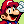
Mario is the revered hero of the Mushroom Kingdom. With his jumping and running skill, he's the best man to call if you want a Goomba stomped, a Pirahna Plant out of your pipe, or the princess saved.
- (1981)
Donkey Kong - (1985)
Super Mario Bros. - (2023)
Super Mario Bros. Wonder
Luigi
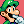
The scaredy brother to Mario, Luigi is packing on some skils of his own, his jumps are even better than his brother's, and having mastered the Thunderhand, he's a force to be reckoned with.
- (1983)
Mario Bros. - (2001)
Luigi's Mansion - (2023)
Super Mario Bros. Wonder
Toad
Note: This character is unfinished as of the current release.
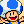
Toads are mushroom people that make up the backbone of the Mushroom Kingdom. Peaceful by nature, they often need to be saved. This one brave Toad holds some unprecedented strength and has stood right next to Mario to help save the Mushroom Kingdom.
- (1988)
Super Mario Bros 2 USA - (1994)
Wario's Woods - (2023)
Super Mario Bros. Wonder
Yoshi
Note: This character is unfinished as of the current release.
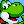
Yoshi is one of many in his fruit-loving species, assisting the Mario Brothers since they were babies. He's quick, jumps high, can make eggs, and throw them too. You could even ask for a piggy-back ride.
- (1990)
Super Mario World - (1995)
SMW2: Yoshi's Island - (2023)
Super Mario Bros. Wonder
Wario
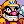
Wario is an avid treasure hunter intent on always getting richer. While he may not jump as high as his rival Mario, his strength lets him burst through anything to get whatever he wants. He reeks of garlic.
- (1992)
Super Mario Land 2: 6 Golden Coins - (2001)
Wario Land 4 - (2023)
WarioWare: Move It!
Bowser
Note: This character is unfinished as of the current release.
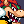
The big, bad, king of koopas himself. After his army of goons betrayed him, he has no choice but to work with his enemies to save the Mushroom Kingdom.
- (1985)
Super Mario Bros. - (1994)
Wario's Woods - (2023)
Super Mario Bros. Wonder
Sonic
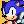
He's the world's most famous hedgehog: Sonic's known for running faster than the speed of sound, and he's always there to help anyone in need. For years, he's been saving the world from the evil Dr. Eggman.
- (1991)
Sonic the Hedgehog - (2002)
Sonic Advance - (2023)
Sonic Superstars
???
The 7 Chaos Emeralds hold a mysterious power...
Spoiler
Super Sonic
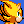
After collecting the seven Chaos Emeralds, Sonic can take on a new form: Super Sonic. This gives him incredible speed and power, being able to take even the toughest of foes down. But it doesn't last forever...
- (1992)
Sonic the Hedgehog 2 - (2022)
Sonic Frontiers - (2023)
Sonic Superstars
Tails
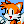
This orange genius is capable of using his two tails to fly and keep up with his best friend, Sonic. His intellect has lead to the creation of many useful items.
- (1992)
Sonic the Hedgehog 2 - (2002)
Sonic Advance - (2023)
Sonic Superstars
Knuckles
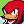
Rougher than the rest of them, tougher than leather. As the last echidna standing, he has the duty of guarding Angel Island's precious gem, the Master Emerald, from getting in the wrong hands.
- (1994)
Sonic the Hedgehog 3 - (2001)
Sonic Adventure 2 - (2023)
Sonic Superstars
Amy
Note: This character is unfinished as of the current release.
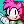
A Sonic-infatuated girl who's always willing to help out those in need. She has grown to be able to defend herself with her trusty Piko Piko Hammer. With her strength now, be ready to stand out of her way.
- (1993)
Sonic CD - (2002)
Sonic Advance - (2023)
Sonic Superstars
Fang
Note: This character is unfinished as of the current release.
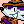
Fang is an overconfident treasure hunter. He can't spin and has no small form, however his tail and popgun more than make up for it in both maneuverability and offense.
- (1994)
Sonic Triple Trouble - (1996)
Sonic The Fighters - (2023)
Sonic Superstars
Mecha Sonic
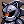
Eggman's first attempt to copy his mortal enemy, Sonic the Hedgehog. He's been sent out to gather the Chaos Emeralds, and gather data to help the doctor to take over the Mushroom Kingdom.
- (1992)
Sonic the Hedgehog 2 - (1999)
Sonic Pocket Adventure - (2016)
Lego Dimensions
???
What happens in the minus world?
Spoiler
Ashura
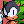
Ashura's striking resemblance to Sonic is no coincidence: this buggy hedgehog, born from the water, can glitch the world to his favor, which he does by teleporting and attracting coins.
- (1992)
Sonic the Hedgehog 2 - (2010)
Sonic Boll - (2022)
Boll Deluxe
The Kid
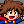
Setting off on an adventure to become The Guy, he accidentally got hit by an interdimensional Delicious Fruit, landing him here. He believes Bowser must somehow be associated with The Guy.
(2007)
I Wanna Be The Guy
Giana
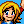
Giana is an adventurous girl with a fancy for shiny gems. She can glide through the air in a delicate spin, and transform into a redheaded punk, capable of bashing through solid stone and lighting enemies ablaze.
- (1987)
The Great Giana Sisters - (2009)
Giana Sisters DS - (2012)
Giana Sisters: Twisted Dreams